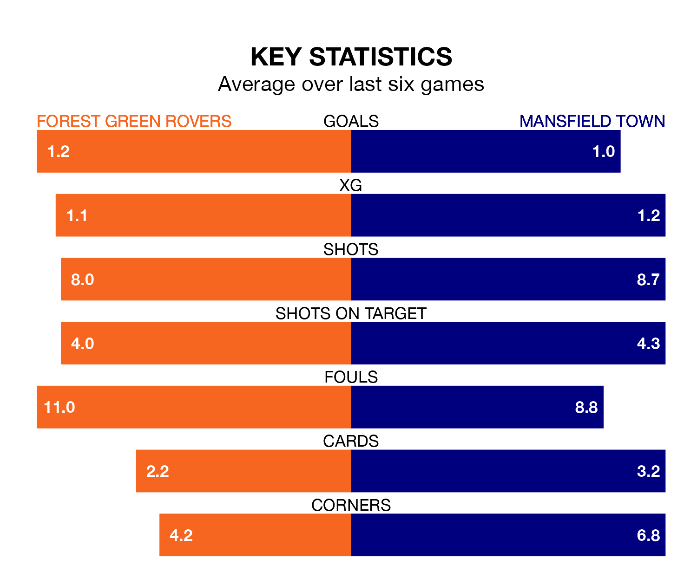

Mid-season relegation candidates Forest Green Rovers face a challenge against high-flying Mansfield Town at the Bolt New Lawn on Saturday.
Forest Green Rovers are rooted to the bottom of the EFL League Two table, and have picked up four wins and eight draws in their 29 games to date.
The Stags, meanwhile, are second in the standings with 54 points, having won 14 and drawn 12, and are four points behind table-toppers Stockport County.
In Christy Pym, Mansfield can rely on one of the league's safest pair of hands. He has kept 11 clean sheets in his 29 appearances this season, and no 'keeper has prevented the opposition scoring more often in EFL League Two.
In Forest Green's net, Luke Daniels has three clean sheets in 18 games. He has conceded a goal every 54 minutes, more than twice as often as the 119 minutes between goals for Pym.
With 30 goals in 29 games so far this season, Rovers are the league's second-lowest scorers with 1.0 goals per game. And they are conceding more than average, letting in 53 goals at a rate of 1.8 per game.
Town, meanwhile, are above average scorers, with 1.7 goals per game, compared to a league average of 1.5. They have conceded 0.8 goals per game.
In the last 10 years, Forest Green and Mansfield have played each other on 10 occasions. They won three each, and they drew four times.
On average, the Green scored 1.3 goals and the Stags 1.3 in those matches.
Their last meeting was on May 7 2022, when they played out a 2-2 draw.
The Green are in bad form in EFL League Two, with no wins and four draws from their last six games.
With two wins and two draws over that period, the Stags' form is better – they have taken eight points from 18, compared to the hosts' four.
Forest Green's last match was on February 3, a 3-3 draw against Colchester United, with Christian Doidge, Dominic Thompson and Mathew Stevens getting the goals for the Green.
Mansfield beat Notts County 1-0 last time out, also on February 3, with Davis Keillor-Dunn on the scoresheet.
Updated: 11:47 (UTC), 05/02/24